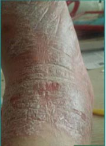
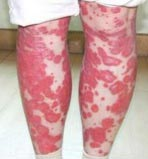
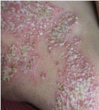
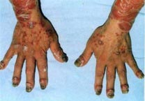

01
皮肤癣反复难断根？错误方法要不得！
(俗称:皮肤癣)折磨这么多年，你是否发现？
奇痒难忍:
是不是每天皮肤干得像树皮，痒得无法安睡？抑或是脓疱，还是水泡？
经久难愈:
药渣子快把自己给埋了，可还是治不好？西药吃了一大推，结果可能吃成了药源性肝炎！
反复发作:
刚在外地治疗好，结果一下火车，妈呀，又犯病了！
患了皮肤癣，很难治疗好，易复发是它的特点。很多人患了之后，使用错误的方法，导致病情加重，蔓延全身，有的可能引发红皮型的。可能包括雷公藤、糖皮质激素以及免疫抑制等，这类产品的起效可能很快，副作用大，反弹严重，可能还会对肝脏造成不可逆转的伤害！
想要深入了解皮肤癣的根源所在，根据自身情况找到真正的解决方案，请添加李老师微信：(点击复制)
02
癣！癣！癣！得了皮肤癣到底有何危害？
危害1:
正常皮肤表皮细胞28天更新代谢一次，而皮肤癣患者皮肤3-4天变会脱落一次，这样严重损耗患者身体能量，导致蛋白质和多种微量元素的大量流失！
危害2:
可能遗传，不是传染，而遗传比传染还厉害，这一代一代就成了家族遗传的种子，谁希望这一身的癣遗传给自己的孩子？
危害3:
这一身的癣，找不到对象，找不到好工作，甚至严重影响夫妻生活质量，谁愿意每天在床上搂着干干的老树皮睡觉？患者往往因此，妻离子散---幸福感几乎为零！
危害4:
皮肤是人体最大的免疫器官，是进行体外和体内环境交换的通道，可往往癣的出现栓塞了毛孔和皮脂腺孔，可能导致了皮肤不能正常排汗，呼吸，甚至不能调节体温和进行免疫活动，因此，患者可能会出现免疫力低下，精神萎靡，引发低烧等很多的炎症和其他病症！
03
您属于哪种皮肤癣，皮肤癣自我诊断！
荨常型皮肤癣

症状：大多急性发病，扩延全身，原发疹为针帽头至扁豆大小的炎性丘疹或斑丘疹，呈特有的淡红色，境界明显，表面被覆多层银白色鳞屑，周围有轻度红晕。剥除鳞屑可露出半透明薄膜，剥除此膜则出现小的出血点，自觉有不程度瘙痒。
分布：局部逐步扩延全身，有家族史及免疫力低下者易患本病。
红皮病型皮肤癣

症状：约占皮肤癣的1.62%，多由寻常型皮肤癣治疗不当而引起，如在进行期外用刺激性强的药物，如长时间、大剂量使用免疫抑制剂突然停药后而引起。
分布：皮疹初发常在四肢屈側，发生局限性红疹，迅速扩延全身，呈广泛潮红，继而大量脱屑，呈糠麸状，常伴有发热、畏寒、头痛、关节痛等全身症状，治疗较顽固，易于复发。
脓胞型皮肤癣

症状：皮损初发为在急性炎症红斑的基础上，出现多数密集针头至粟粒大小无菌性表浅脓胞，附有少量菲薄鳞屑。脓胞迅速增多，相互融合成大片脓糊状或成为环形红斑状，但其下又可再发新的脓胞，常因接触摩擦等外因，使脓胞破裂形成糜烂结痂。
分布：以四肢屈側及皱襞处较多，也可累及全身。
关节型皮肤癣

症状：关节红肿疼痛，轻者关节红肿轻微，有轻度变形，本病多与脓疱性皮肤癣或红皮病性皮肤癣并发，常伴有高热、贫血等全身症状，本病可长期迁延，治疗困难，伴发脓疱型皮服癣者预后较差。
分布：发于大小关节，亦见于脊柱，但以手、腕、足等小关节特别是指(趾)末端关节多见。
想要深入了解皮肤癣的根源所在，根据自身情况找到真正的解决方案，请添加李老师微信：(点击复制)
05
祛癣后的保养也非常重要哦！
李老师告诉大家：
皮肤癣治好以后，一定要重视养护，这么多年以来我也算是颇有经验，以下几点养护心得分享给大家。
1每天八杯水，早晨没有进食前必须要喝一大杯水，能够清肠胃。
2每天一便，坚持养成良好的排便习惯，必要时可吃香蕉调节一下。
3切忌熬夜，熬夜是皮肤的最大天敌。
4饮食需要改变，以增强免疫力，避免常常感染霉菌，应少吃淀粉类、糖类以及刺激性的食物如酒、辣椒等
5皮肤癣患者请穿棉质内裤，尽量不要穿尼龙、合成纤维的质料，才能保持通风、透气。
6最好在十一点前睡觉，睡前不要吃宵夜。
7上火的东西尽量少吃。
8个人卫生很重要，请做好个人卫生。
版权所有：深圳市丽俫瑞叁科技有限公司
ICP备案号：粤ICP备20004311号-2